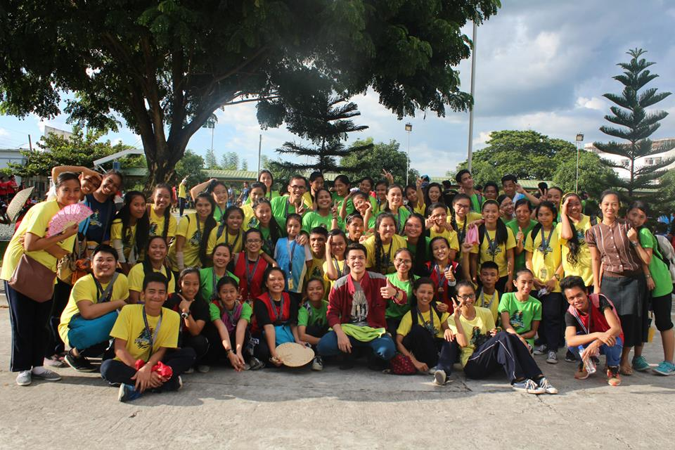
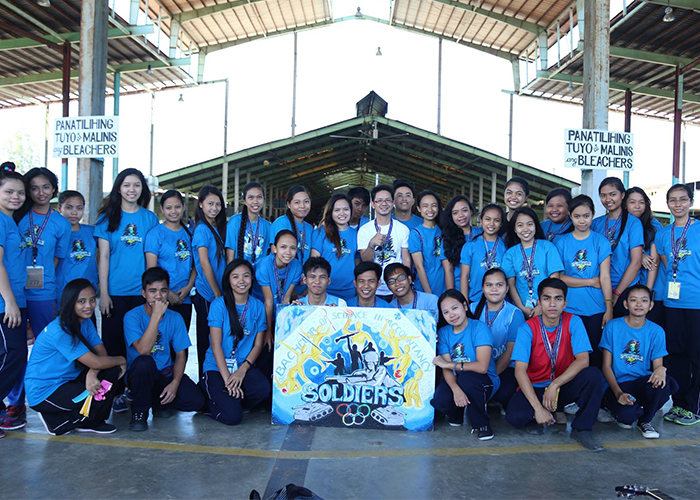
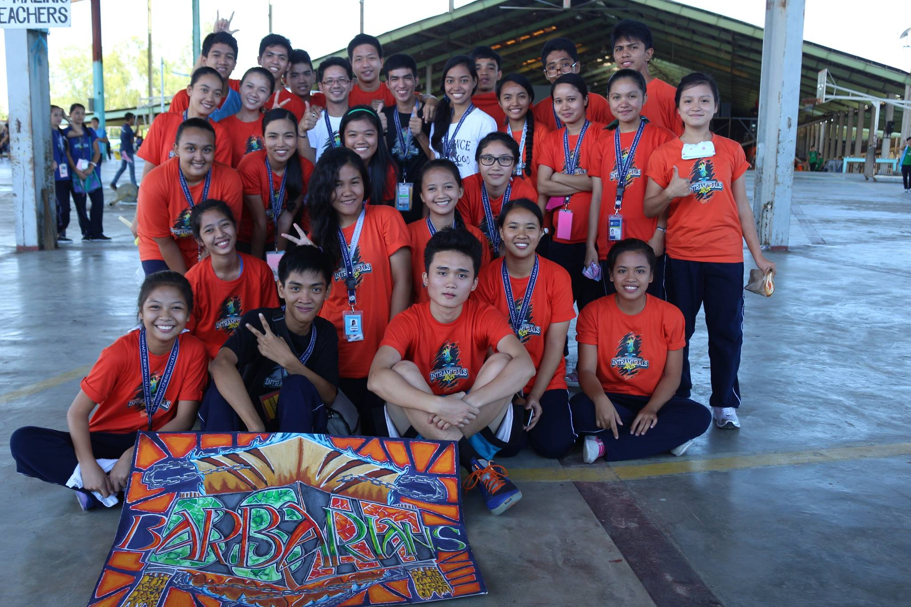
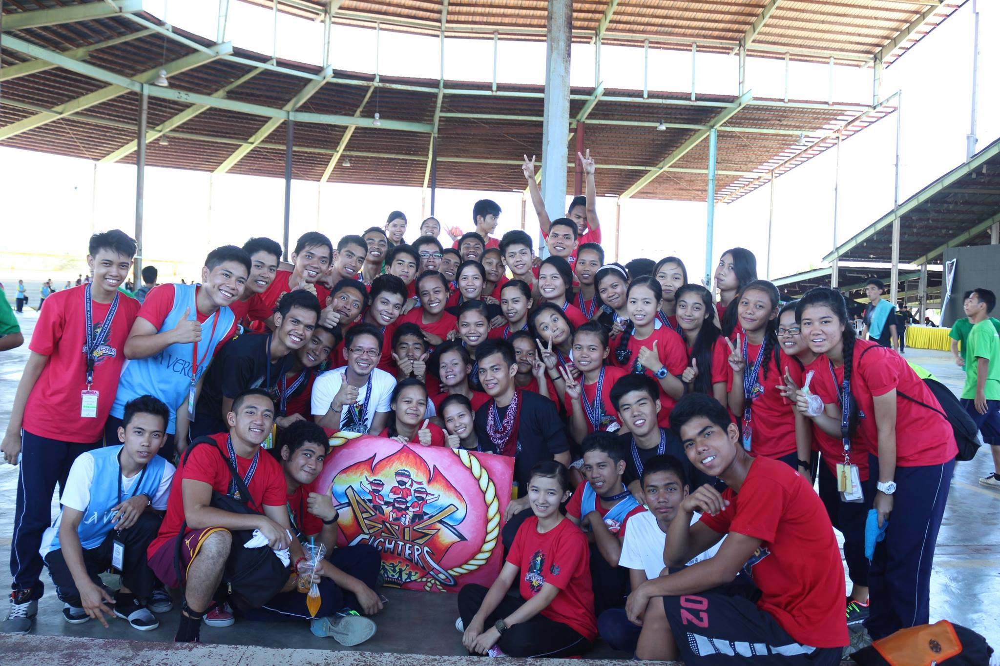
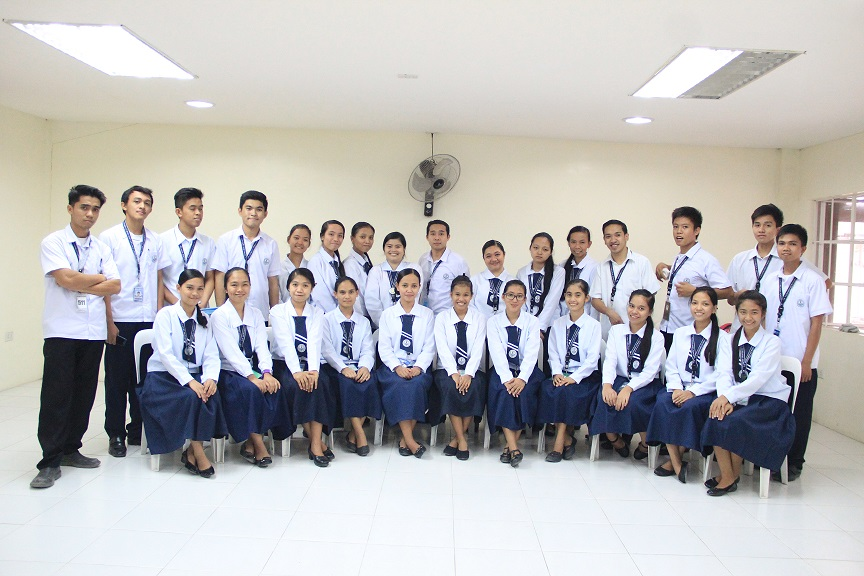
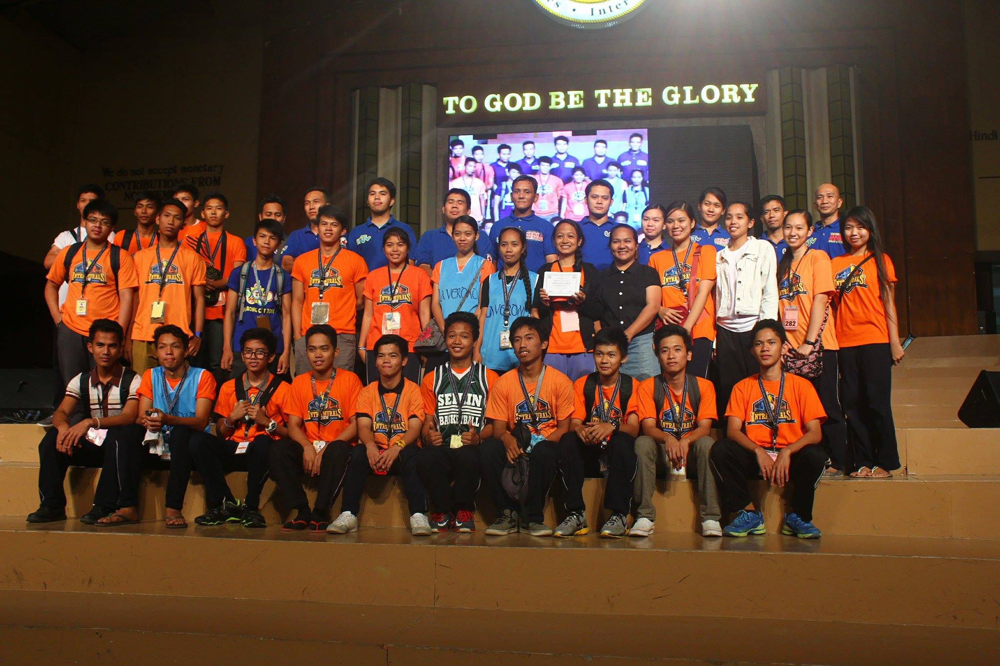
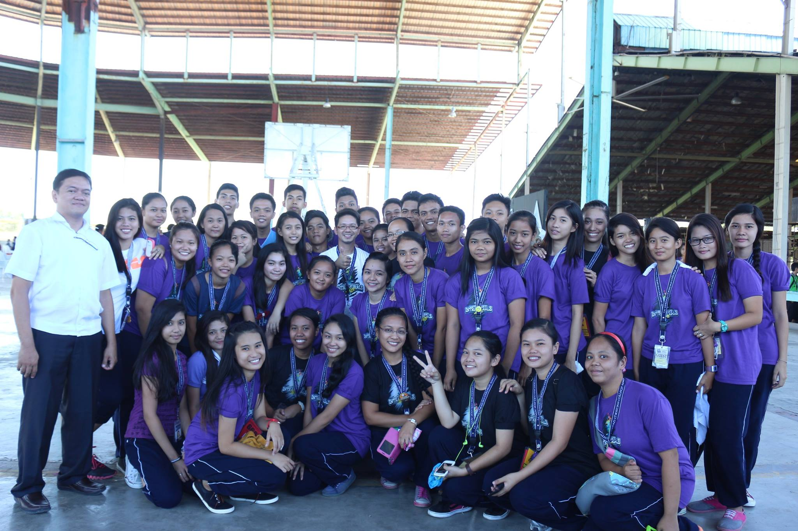
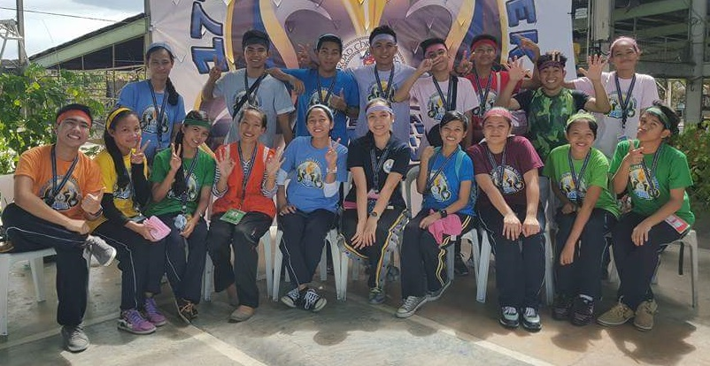
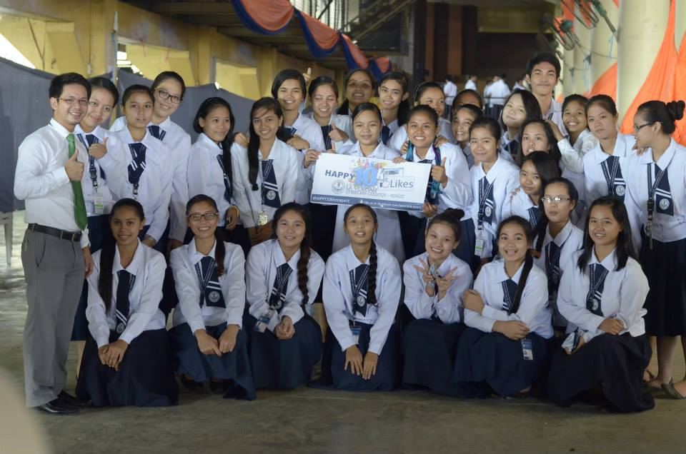

COURSES OFFERED
Bachelor of Arts in Broadcasting

Bachelor of Science in Accountancy

Bachelor of Science in Accounting Technology

Bachelor of Science in Information System

Bachelor of Science in Social Work

Associate in Computer Technology

TESDA PROGRAMS
Mass Communication Technology.jpg)
Office Management

Nursing Assistant

International Cookery
